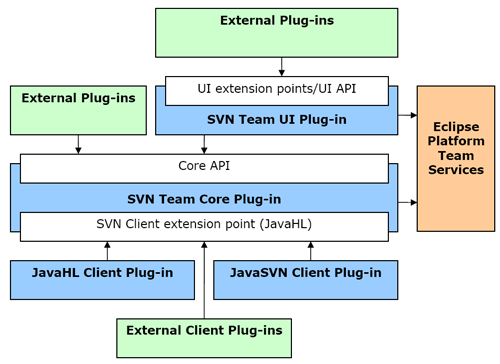

|
|
|
There are two main plug-ins in the Subversive project: Core and UI. As you can see from the following picture contributors may implement their own SVN Client Library plug-ins and Subversive will use them automatically after its installation into the Eclipse IDE. Also Subversive provides reuse abilities to the external plug-ins designed for automated or interactive work.
Subversive Core module provides flexible and easy to use API which allows user to interact with all SVN functionality in simple and similar way. At the same time interface simplicity does not make performance impact and user is able to build powerful and high-performance applications on top of the Subversive Core base. Subversive Core is tested in the headless environment and is a solid ground for creation of automated applications.
Subversive UI module is stable and usable. Most significant benefits are:Last benefit allows users create their own UI extensions for the Subversive. Such extensions can be tracker integrations or any other application that require SVN client base. Additionally the Subversive UI has several extension points which allows contribute into:
This list can be extended. Comments and suggestions from community regarding enhancement of the Subversive integration abilities, creation new extension points and APIs, are welcome.